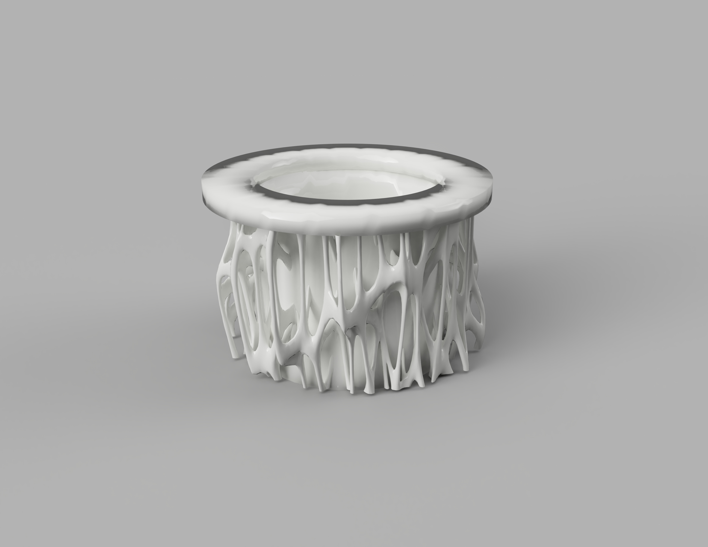
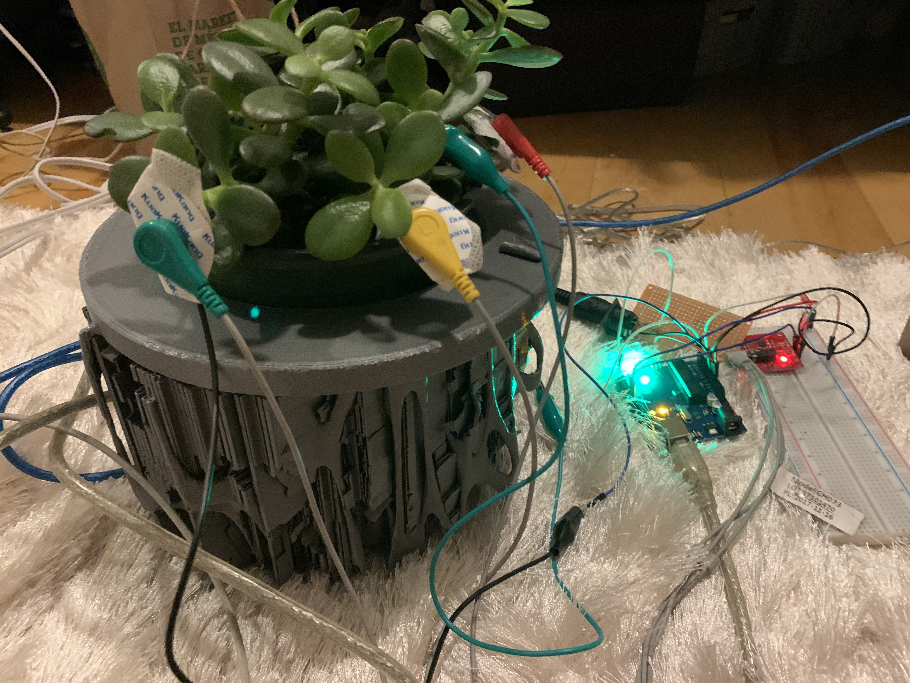

A generative audio project, the intention was to create an object that would serve as a music making device. The end deliverable was a 3D printed planter that housed an arduino, one input used a ecg shield connected to the leaves of the plant, the output was connected to a Streichfett polyphonic synthesizer. The end result took the eletrical impulses from the plant, translated that into midi information, and sent the midi to the snythesizer which was connected to powered speakers. The plants would generate a tone, which could be manipulated by interaction of the user, encouraging interaction and creating a feedback loop with an object which is usually simply decorative.
One of the main challenges was determining how to create an object that would still be autonomous [not requiring any interaction] while still remaining playful and enticing to facilitate interaction. There were many iterations to the design, ultimately I decided on an organic looking support legs playing up the interaction of life and technology.
The process involved a lot of trial and error, making sure the cavity at the bottom was big enough to the arduino and the i/o was a challenge.
While this was a fun and rudimentary exploration of generative sound, I like to focus on the timbre and the sonic characteristics that are conveyed. It would be interesting if other atmospheric or temporal conditions could somehow act as modifiers on the sound. Ultimately it would be advantageous to have the synthesizer as well as the speaker all be self contained within the planter.